专题09 一元一次方程基础应用题分类训练01

考点01 工程问题
考点02 行程问题
考点03 销售问题
考点04 得分问题
考点05 幻方问题
考点06  几何问题
几何问题


考点01 工程问题
1．一项工程甲单独做需要10天，乙需要12天，丙单独做需要15天，甲、丙先做2天后，甲因事离去，乙加入丙一起工作，问还需几天完成？
2．甲组的4名工人3月份完成的总工作量比此月人均定额的4倍多20件，乙组的5名工人3月份完成的总工作量比此月人均定额的6倍少20件．如果甲组工人此月人均实际完成的工作量比乙组的少2件，那么此月人均定额是多少件？
3．已知某水池有甲、乙两个进水管．单独开放甲管， 可以将空水池注满；单独开放乙管，
可以将空水池注满；单独开放乙管，
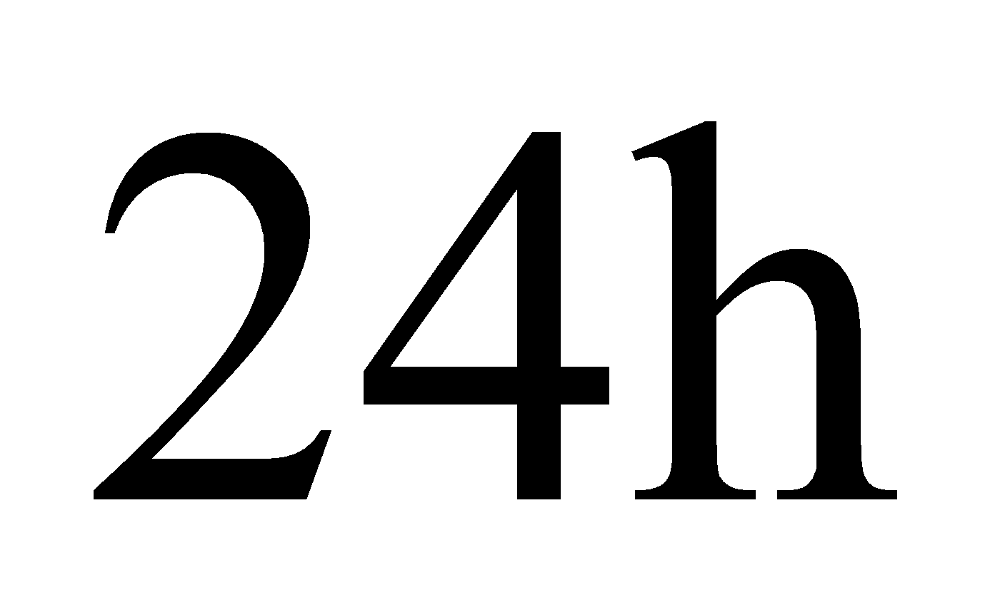
可以将空水池注满．如果先打开甲管对空水池注水 ，再打开乙管同时注水，那么注满水池还需多少小时？
，再打开乙管同时注水，那么注满水池还需多少小时？4．在繁忙的都市生活中，地铁作为城市交通的重要组成部分，承载着无数人的日常出行需求．某线路地铁进行修建，修建后产生的建筑垃圾需要清理．现计划租用甲、乙两车队清理建筑垃圾，已知甲车队单独运完需要9天，乙车队单独运完需要12天．乙车队先运了5天，然后甲、乙两车队共同合作运完剩下的垃圾．（列方程解决下列问题）
(1)甲、乙两车队共同合作了多少天？
(2)已知甲车队每天的租金比乙车队多80元，运完垃圾后需支付甲、乙两车队租金共5740元，求乙车队每天的租金．
5．列方程解应用题:某隧道及连接道路工程项目全长500米，其中隧道(地下路段)长度220米，剩余为连接道路（地上路段）．现有甲、乙两个工程队负责工程项目的修建，已知乙工程队每天修建地上路段的长度是甲工程队每天修建地上路段长度的 倍，一期工程甲、乙两工程队一起修建完280米长的地上路段，用时共4天．
倍，一期工程甲、乙两工程队一起修建完280米长的地上路段，用时共4天．
(1)求一期工程中甲、乙两工程队每天分别修建地上道路多少米?
(2)工程二期，由甲、乙两工程队继续负责地下路段的建设，由于建设难度的提升，甲、乙两工程队每天可修建地下道路长度缩减为一期工程的一半．工程二期，甲工程队每天修建道路的费用为3万元，乙工程队每天修建道路的费用为9万元．若安排由甲、乙共同修建该地下路段的一部分，剩下部分由甲工程队单独完成，工程二期总费用为72万元，求甲工程队在工程二期道路建设中单独修建了多少天?
6．“告别百年隐患，守护城市安全”初冬的哈尔滨中央大街，地下管网改造一片繁忙．现有甲乙两个工程队，需要对一小区进行改造，甲工程队单独完成这一项工程需要20天，乙工程队单独完成这项工程所需的时间比甲工程队多 ．
．
(1)求乙队单独完成这项工程需要多少天？
(2)现在若甲工程队先做5天，剩余部分再由甲乙两队合作，还需要多少天才能完成？
(3)原计划由乙工程队单独完成这项工程，乙工程队工作几天后接到通知要缩短工期，后期工程由甲、乙两工程队合作完成，若甲工程队工作的总天数是乙工程队工作的总天数的 ，乙工程队每天施工费是甲工程队每天施工费的，最后甲、乙两队施工费共计7万元，求甲、乙工程队每天施工费多少万元？
，乙工程队每天施工费是甲工程队每天施工费的，最后甲、乙两队施工费共计7万元，求甲、乙工程队每天施工费多少万元？
7．某中学有甲、乙两台印刷机，学校期末考试所需数学试卷如果用甲、乙两台印刷机单独印刷分别需要1小时和 小时，为了保密，学校决定在考试前的一小时开始印刷数学试卷．
小时，为了保密，学校决定在考试前的一小时开始印刷数学试卷．
(1)若甲、乙两台印刷机同时印刷，共需要多少小时才能印完？（要求列方程解答）
(2)在两台印刷机同时印刷半小时后，甲印刷机出现故障停止印刷，此时离发卷还有 分钟．请你计算一下，如果乙印刷机单独完成剩下的印刷任务，会不会影响按时发卷？
分钟．请你计算一下，如果乙印刷机单独完成剩下的印刷任务，会不会影响按时发卷？
8．一项工程，如果甲队单独完成需要12天，乙队单独完成所需的时间比甲队多．
(1)求乙队单独完成这项工程需要多少天？
(2)现在若甲队先做7天，剩余部分再由甲乙两队合作，求完成这项工程需要多少天？
(3)原计划由乙队单独完成这项工程，乙队工作几天后接到通知要缩短工期，后期工程由甲、乙两队合作完成．若甲队工作的天数是乙队工作天数的，乙队单独施工一天需工程款0.2万元，乙队每天工程款比甲队每天工程款的少0.01万元，求完成这项工程共需支付多少元工程款？（注：甲、乙两队施工过程中工作效率始终不变）
考点02 行程问题
9．某中学学生步行到郊外旅行，七年级（1）班学生组成前队，步行速度为
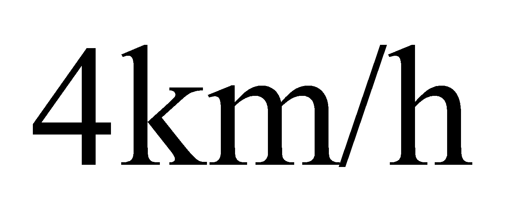
，七年级（2）班的学生组成后队，速度为 ．前队出发
．前队出发 后，后队才出发，后队追上前队需要多长时间？
后，后队才出发，后队追上前队需要多长时间？10．已知A、B两城相距120公里，甲、乙、丙三人从A城出发去往B城，甲骑车速度为15公里/小时，乙、丙的步行速度都为5公里/小时．
(1)乙和丙要比甲提前多久步行出发，才能三人同时到达B城？
(2)甲、乙、丙同时从 城出发，丙步行，甲骑车带乙行至D处，乙下车向B城步行，甲骑车返回迎接丙，在C点与丙相遇，再带丙到B城，结果三人同时到B城，问乙步行了多少公里？
城出发，丙步行，甲骑车带乙行至D处，乙下车向B城步行，甲骑车返回迎接丙，在C点与丙相遇，再带丙到B城，结果三人同时到B城，问乙步行了多少公里？
11．甲、乙两人骑自行车，同时从相距
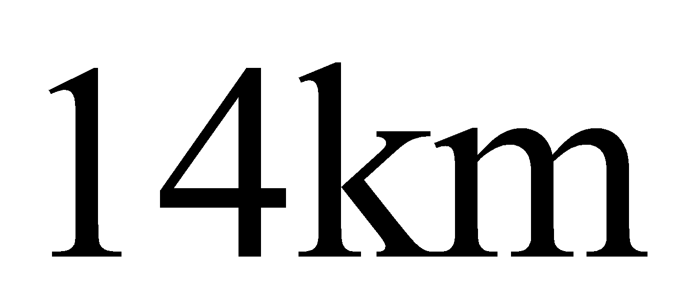
的两地相向而行，甲的速度为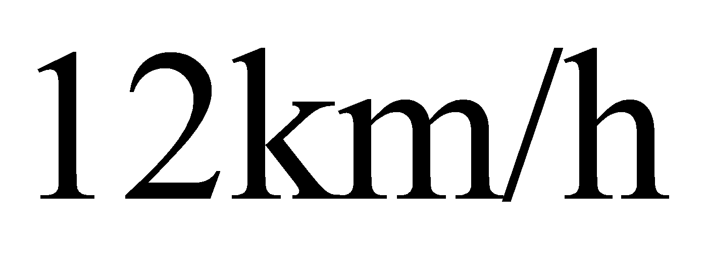
，乙的速度为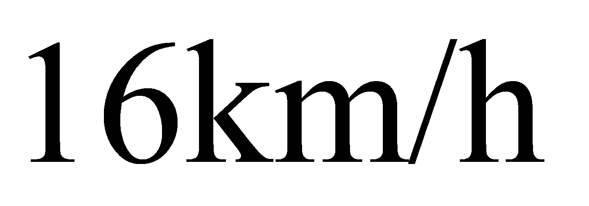
，他们出发后多长时间相遇？小明的解答思路为：设他们出发
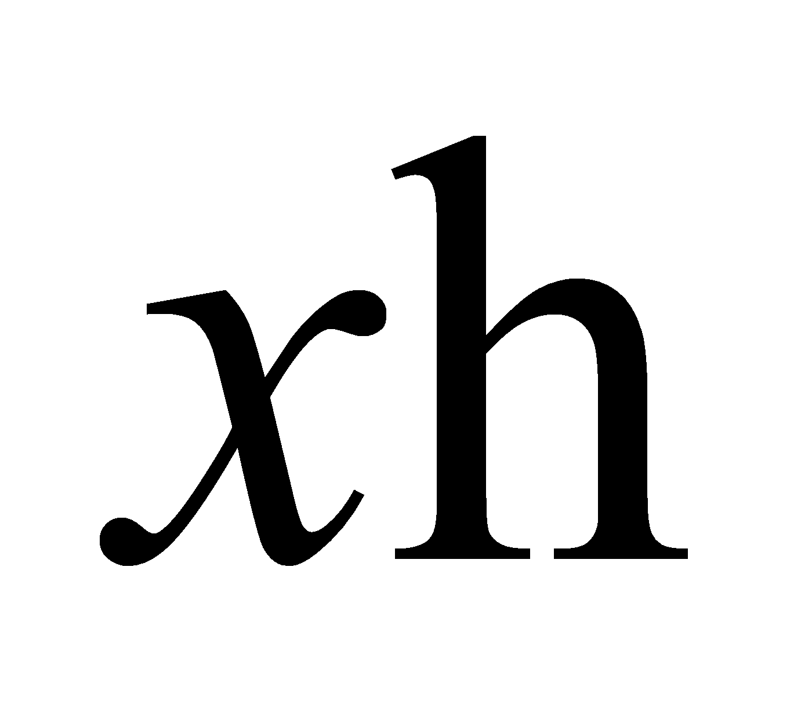
后相遇，画出如下分析图．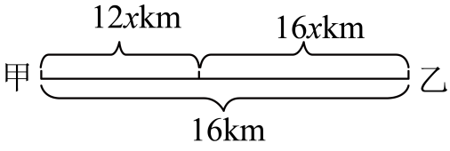
列出的方程为 ．
．
(1)请结合图示解释小明所列方程两端各项的含义．
(2)请在学过的题目中选出两道具有“部分 部分
部分 整体”这种等量关系的题目．
整体”这种等量关系的题目．
12．小李家和小刚家相距 ，两人同时从家出发，相向而行．
，两人同时从家出发，相向而行．
(1)如果小李每分钟走 ，小刚每分钟走
，小刚每分钟走
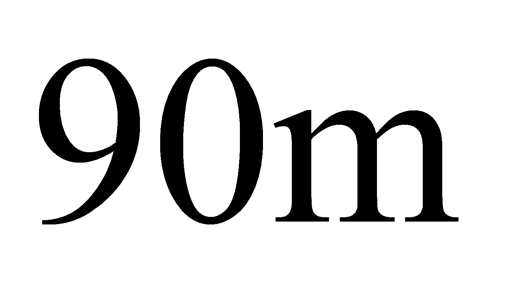
，那么两人几分钟后相遇？(2)如果小李每分钟走，
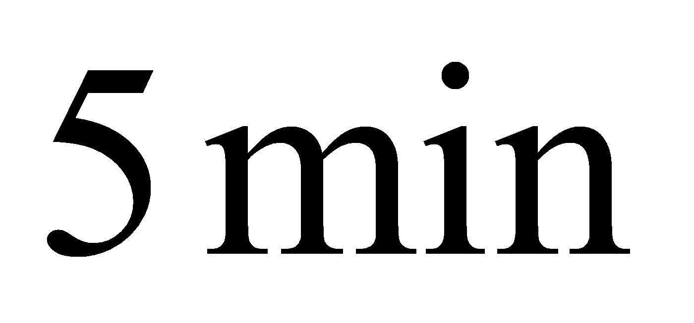
后两人相遇，那么小刚每分钟走多少米？13．A，B两村之间的路程是
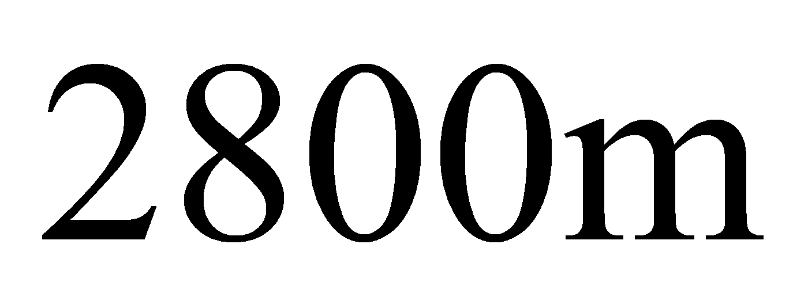
．小明从A村出发向B村步行后，小军骑自行车沿同一条路从B村向A村出发，又经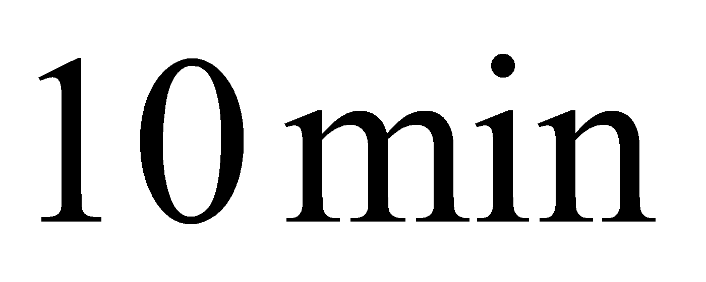
两人相遇．小军骑自行车比小明步行每分钟多走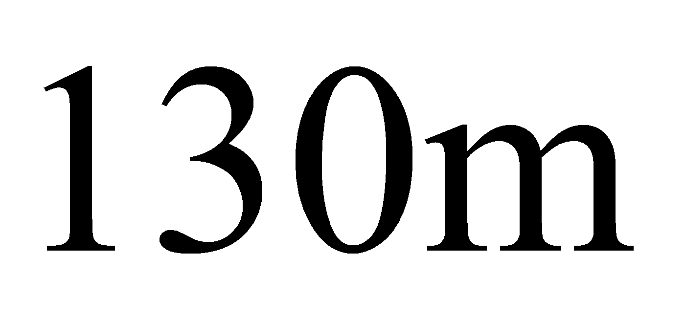
，那么小明每分钟步行多少米?14．妈妈 从家出发步行去乘火车，
从家出发步行去乘火车，
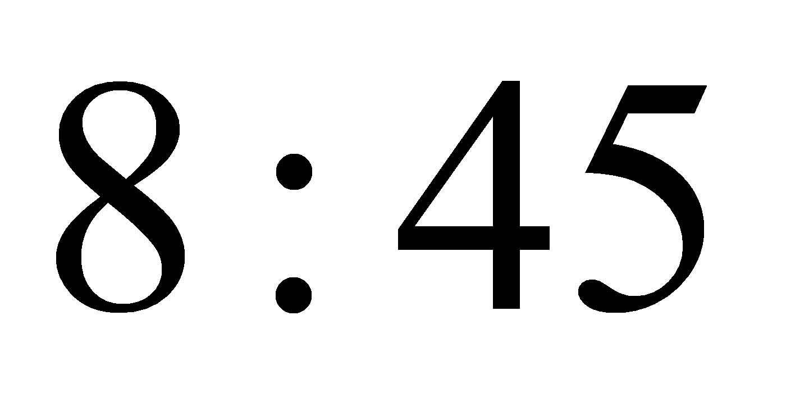
时小明发现妈妈忘记带手机，立即骑车追赶，已知妈妈每分钟步行60米，小明每分钟骑行240米，如果火车站距家1800米，那么小明能在妈妈到达火车站前追上她吗？如果能，何时追上？如果不能请说明理由．15．甲、乙两船从同一港口同时出发反向而行，甲船顺水，乙船逆水，两船在静水中的速度都是 千米/时，水流速度是
千米/时，水流速度是 千米/时．（顺水速度静水速度水流速度，逆水速度静水速度
千米/时．（顺水速度静水速度水流速度，逆水速度静水速度 水流速度）
水流速度）
(1)用含的代数式表示甲船顺水速度和乙船逆水速度；
(2)用含的代数式表示 小时后甲船比乙船多航行的路程；（结果化为最简）
小时后甲船比乙船多航行的路程；（结果化为最简）
(3)若小时后甲船比乙船多航行 千米，求的值．
千米，求的值．
16．小明以每小时3千米的速度登山，走到途中A点，他将速度降为每小时2千米，在接下来的1小时中，他走到山顶，又立即下山，并走到A点上方200米的地方，如果他下山的速度是每小时4千米，下山比上山少用了 42 分钟，那么，他往返共走了多少千米？
考点03 销售问题
17．某文具店购进一批笔记本，进价为每本8元．
(1)若按标价的9折销售，每本可获利2元，求每本笔记本的标价；
(2)在（1）的条件下，若该店按标价售出 本，按9折售出
本，按9折售出 本，按8折售出本，求该店共获利多少元？
本，按8折售出本，求该店共获利多少元？
18．列一元一次方程解决实际问题：
魔方和数独棋等益智玩具近年来深受青少年的喜爱，它们不仅能给人带来乐趣，还能有效锻炼人的逻辑思维和问题解决能力．为了满足市场需求，某商店决定用 元购进魔方、数独棋这两种益智玩具进行销售，其中购进魔方的数量是数独棋数量的
元购进魔方、数独棋这两种益智玩具进行销售，其中购进魔方的数量是数独棋数量的 倍，魔方、数独棋的进价和标价如下表：
倍，魔方、数独棋的进价和标价如下表：
魔方 | 数独棋 | |
进价（元 |
|
|
标价（元 |
|
|
 个）
个）


(1)该商店购进魔方、数独棋各多少个？
(2)如果魔方按标价的七折出售，数独棋按标价的八折出售，那么这两种益智玩具全部售完后，该商店共获利多少元？
19．某商场销售A，B两种品牌的营养早餐牛奶，其中A品牌牛奶的售价为50元/箱，B品牌牛奶的售价为70元/箱．某校决定在该商场购进A，B两种品牌牛奶共100．箱，恰逢商场对两种品牌牛奶的售价进行调整：A品牌牛奶每箱的售价比原售价减少了5元，B品牌牛奶每箱按原售价的八折出售．设学校购进A品牌牛奶x箱．
(1)请直接在表格中填写结果：
品牌 | 购买价格/（元/箱） | 购买量/箱 | 购买总价/元 |
A | 45 |
|
|
B | ______ |
| ______ |


(2)如果该校此次购买A，B两种品牌牛奶的总费用为4940元，那么该校此次购买了多少箱A品牌牛奶和B品牌牛奶？
20．我校开展校园艺术节系列活动，派小明到文体超市购买若干个文具袋作为奖品．这种文具袋标价每个 元，请认真阅读结账时老板与小明的对话．
元，请认真阅读结账时老板与小明的对话．
老板 | 如果你再多买一个，就可以打八五折，花费比现在还省 |
小明 | 那就多买一个吧，谢谢！ |
 元
元(1)结合两人的对话内容，求小明原计划购买文具袋多少个？
(2)学校决定，再次购买钢笔和签字笔共 支作为补充奖品，其中钢笔标价每支8元，签字笔标价每支6元，经过沟通，这次老板给予8折优惠，合计
支作为补充奖品，其中钢笔标价每支8元，签字笔标价每支6元，经过沟通，这次老板给予8折优惠，合计
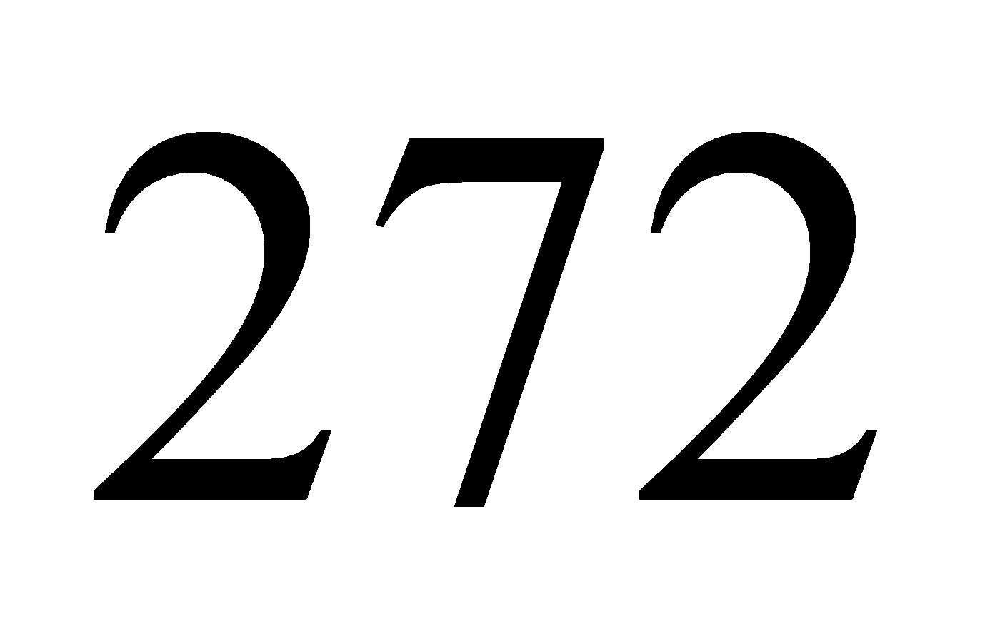
元，那么小明购买钢笔多少支？21．某水果店以5元/千克价格购进一批苹果，由于销售良好，该店又以 元/千克价格再次购进同一种苹果，这样该水果店两次购进苹果共600千克，花去2800元．
元/千克价格再次购进同一种苹果，这样该水果店两次购进苹果共600千克，花去2800元．
(1)求该水果店两次分别购买了多少千克苹果？
(2)在销售中，尽管两次进货的价格不同，但水果店仍以相同的价格售出，若第一次购进的苹果有
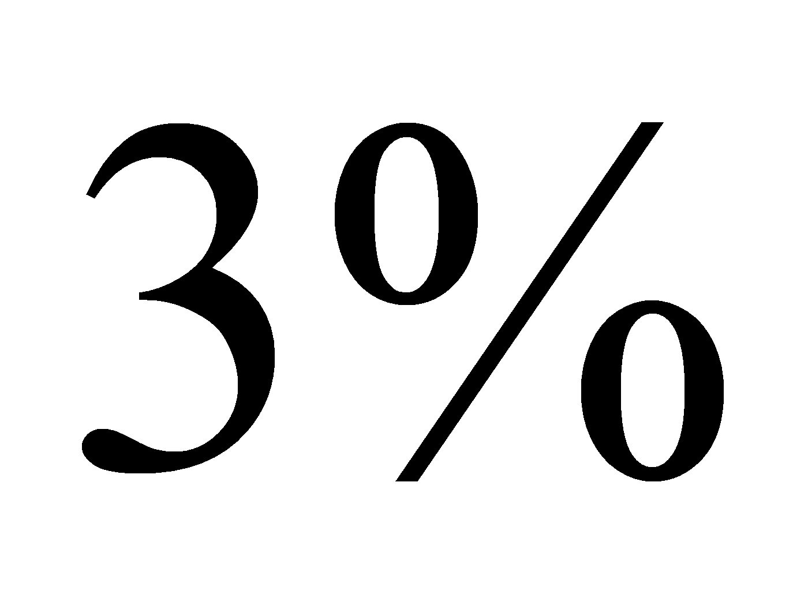
的损耗，第二次购进的水果有 的损耗，并且在销售过程中的其他费用为392元，如果该水果店希望售完这些苹果共获得1400元的利润，那么该水果店每千克售价应定为多少元？
的损耗，并且在销售过程中的其他费用为392元，如果该水果店希望售完这些苹果共获得1400元的利润，那么该水果店每千克售价应定为多少元？22．某超市开展促销活动，一次性购物满200元后将给购物者优惠，购物超过200元不足500元的，按9折优惠；购物超过500元的，500元以下（含500元）仍按9折优惠，而超过500元的部分按8折优惠．某人第一次和第二次购物分别用了134元和490元，问：
(1)此人两次购物时．所购物品的原价是多少？
(2)在此次活动中他节省了多少钱？
(3)如果此人将两次购买的物品一次全部购买，是否更省钱？请说明你的理由．
23．国庆期间，某商场专柜进行优惠大酬宾活动，所有商品一律按照 的利润定价，然后又打九折出售．（成本价
的利润定价，然后又打九折出售．（成本价 利润率利润，成本价利润定价，售价成本价利润）
利润率利润，成本价利润定价，售价成本价利润）
(1)商品A成本价是120元，商品A最后售价多少元？
(2)商品B卖出后，赚了68元，商品B的成本价是多少元？
24．小华同学在A、B两家超市发现她看中的随身听的单价相同，书包单价也相同．随身听和书包单价之和是352元，且随身听的单价是书包单价的4倍少8元．
(1)求小华看中的随身听和书包的单价各是多少元？
(2)小华元旦那天上街，恰好赶上商家促销，超市A所有商品打八折销售，超市B全场购物满100元返购物券30元销售（不足100元不返券，购物券全场通用），但她只带了300元钱，她只想在一家超市购买看中的这两样物品，你能说明她可以选择在哪一家购买吗？若两家都可以选择，在哪一家购买更省钱？
考点04 得分问题
25．某校八年级组织数学竞赛，共有25道题，答对一题得4分，答错或不答扣1分．小明最终得分为75分．
(1)求小明答对了多少道题？
(2)若答对一题得5分，答错扣2分，不答不扣分，其他条件不变，求小明得分．
26．某班组织元旦知识竞赛，共设有20道选择题，各题分值相同，每题必答．下表是， ，
， 三位参赛者答完20道题后的得分情况．
三位参赛者答完20道题后的得分情况．
参赛者 | 答对题数 | 答错题数 | 得分 |
| 19 | 1 |
|
| 16 | 4 | 76 |
| 10 | 10 | 40 |
根据表中信息回答下列问题：
(1)设答对1道题得 分，则答错1道题的得分为_______分（用含的式子表示）．
分，则答错1道题的得分为_______分（用含的式子表示）．
(2)求表格中 的值．
的值．
(3)参赛者 已作答的一部分试题中，只答对了一半．如果他最多能得82分，他已作答了多少道题？
已作答的一部分试题中，只答对了一半．如果他最多能得82分，他已作答了多少道题？
27．某足球协会举办了一次足球比赛，其中得分规则及奖励方案如下表：
规则 | 胜一场 | 平一场 | 负一场 |
积分/分 | 3 | 1 | 0 |
人均奖金/元 | 1500 | 700 | 0 |
当队比赛完12场时，共积20分，并且没有负场．
(1)队胜、平各几场？
(2)每赛1场，队每名队员均获得出场费500元，那么比赛完12场后，队的每名队员所得奖金与出场费共多少元？
28．12月30日光明中学组织了“迎元旦知识竞赛”，共设有20道选择题，各题分值相同，每题必答．下表记录了三位参赛学生的得分情况，根据表中信息回答下列问题：
参赛者 | 答对题数 | 答错题数 | 得分 |
A | 20 | 0 | 100 |
B | 19 | 1 | 94 |
C | 18 | 2 | 88 |
(1)这次竞赛中答对一题得________分；
(2)参赛学生小红得分为70分，求她答对了几道题?
(3)参赛学生小明说他的得分为60分，你认为可能吗?请说明理由．
29．某电视台组织知识竞赛，共设20道选择题，各题分值相同，答对一题得5分，可以选择不答，下表记录的是5名参赛者的得分情况．
参赛者 | 答对题数 | 不答题数 | 答错题数 | 得分 |
A | 15 | 3 | 2 | 79 |
B | 19 | 0 | 1 | 94 |
C | 18 | 1 | 1 | 91 |
D | 16 | 2 | 2 | 82 |
E | 18 | 2 | 0 | 94 |
(1)由表格知，不答一题得________分，答错一题扣________分．
(2)某参赛者答错题数比不答题数的2倍少1，最后得分为76分，他答对了几道题？（请用方程作答）
30．某校组织知识竞赛，共设20道选择题，各题分值相同，每题必答．下表记录了3名参赛同学的得分情况：
参赛者 | 答对题数 | 答错题数 | 得分 |
A | 20 | 0 | 100 |
B | 19 | 1 | 94 |
C | 10 | 10 | 40 |
(1)每答对一道题得 分，答错一道题扣 分．
(2)参赛者D得了88分，他答对了多少道题？
31．某学校组织知识竞赛，共设20道选择题，各题分值相同，每题必答．
参赛者 | 答对题数 | 答错题数 | 得分 |
A | 20 | 0 | 100 |
B | 18 | 2 | 86 |
(1)如上表，记录了A，B两个参赛者的得分情况，依据表中信息可得：每答对一题得_____分，每答错一题扣_____分；
(2)若参赛者得分为65分，求他答对了几道题．
32．某电视台组织知识竞赛，共设20道选择题，各题分值相同，每题必答．如表记录了4个参赛者的得分情况：
参赛者 | 答对题数 | 答错题数 | 得分 |
A | 20 | 0 | 100 |
B | 19 | 1 | 92 |
C | 15 | 5 | 60 |
D | 14． | 6 | 52 |
根据表中的信息解答下列问题：
(1)参赛者E得68分，求他答对了几道题？
(2)参赛者F说他答对的题所得的分数是答错题所扣分数的4倍，你认为可能吗？请你利用所学的一元一次方程知识来说明你的理由．
考点05 幻方问题
33．如图，在 的幻方的九个空格中，填入9个数字，使得处于同一横行、同一竖行、同一斜对角线上的三个数之和都相等．下图是小兰同学要填的幻方，其中有三格被涂黑了，请你根据幻方的填数规则，求出的值．
的幻方的九个空格中，填入9个数字，使得处于同一横行、同一竖行、同一斜对角线上的三个数之和都相等．下图是小兰同学要填的幻方，其中有三格被涂黑了，请你根据幻方的填数规则，求出的值．
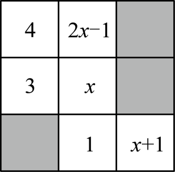
34．“幻方”最早记载于春秋时期的《大戴礼记》中，相传大禹治水时，有只神龟从洛水中跳出来，背上负有洛书，洛书便是最早的幻方．三阶幻方是最简单的幻方，又叫九宫格，它是由九个数字组成的一个三行三列的矩阵．其对角线、横行、纵列的数字之和均相等，这个和叫作幻和．如图1是由1，2，3，4，5，6，7，8，9所组成的一个三阶幻方，其幻和为
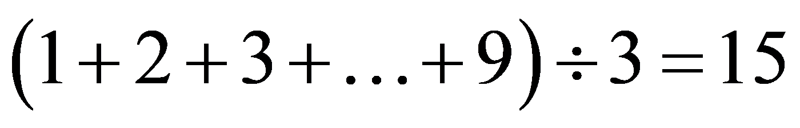
．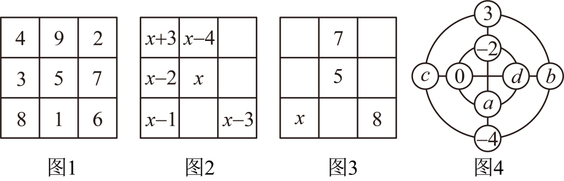
(1)①如图2，设该三阶幻方中间的数字是x(其中x为正整数)，请用含x的代数式将图中的幻方填充完整；
②如图3也是由1，2，3，4，5，6，7，8，9所组成的一个三阶幻方，求x的值．
(2)如图4，这是一个类似于幻方的“幻圆”，将 ，2，
，2， ，0，1，
，0，1， ，3，
，3， 分别填入图中的圆圈内，使横、竖以及内、外两圈上的4个数字之和都相等．现已完成了部分填数．
分别填入图中的圆圈内，使横、竖以及内、外两圈上的4个数字之和都相等．现已完成了部分填数．
①求“幻圆”的幻和；
②求 的值．
的值．
35．若在一个的方格中填写9个不同的数字，使得每一横行、每一竖列及两条斜对角线上的三个数字之和（该和叫做“幻和”）均相等，则称这个的方格为“幻方”．
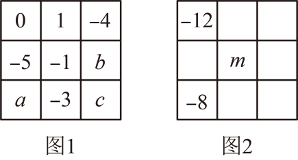
(1)图1是一个“幻方”，则 ______，
______， ______，
______， ______，并请计算出图1中所有数的和与其“幻和”之间的倍数关系．
______，并请计算出图1中所有数的和与其“幻和”之间的倍数关系．
(2)珍珍要将 ，
， ，
， ，
， ，
， ，，，0，2这9个数填入如图2所示的“幻方”中，每个方格中填入一个不同的数，并且使每一横行、每一竖列及两条斜对角线上的三个数字之和均相等，珍珍经过研究，发现在“幻方”中，中间数m是上述9个数的平均数．
，，，0，2这9个数填入如图2所示的“幻方”中，每个方格中填入一个不同的数，并且使每一横行、每一竖列及两条斜对角线上的三个数字之和均相等，珍珍经过研究，发现在“幻方”中，中间数m是上述9个数的平均数．
①求中间数m的值；
②在空白方格内填上正确的数字．
36．幻方起源于中国，是我国古代数学的杰作之一，“洛书”是我国文化中最古老、最神秘的事物之一，对于其来源于何处，如今有各种传说．图1即洛书．数出图1中各处的圆圈个数，并按照图1中的顺序把它们填入正方形方格中，就得到一个幻方（图2）．在这个幻方中，9个格中的数分别是1，2，3，4，5，6，7，8，9，每一横行、每一竖列以及两条斜对角线上的数的和都为15．
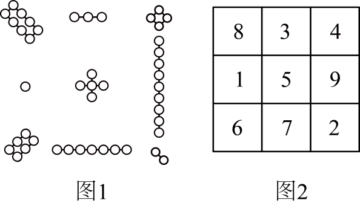
(1)请将
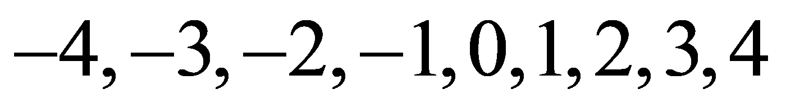
这9个数分别填入图3的幻方的9个空格中，使处于每一横行、每一竖列以及两条斜对角线上的数的和都相等．填法有多种，下面是一位同学的答案，请你帮他填上 的值
的值 ___________
___________ ___________
___________
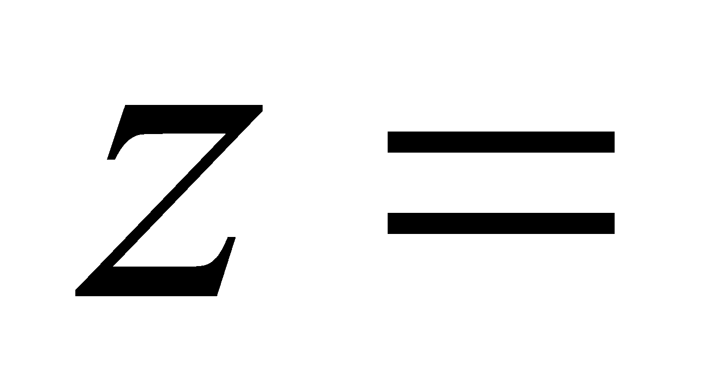
___________．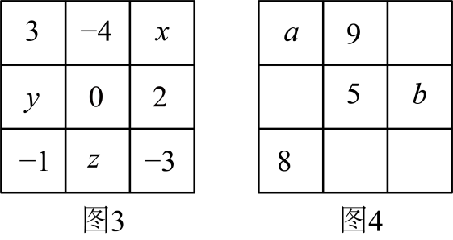
(2)如图4所示，它的每行、每列、每条对角线上三个数之和均相等，则幻方中的 的值是多少？
的值是多少？
37．综合与实践
幻方的历史很悠久，传说最早出现在夏禹时代的“洛书”． 把洛书用今天的数学符号翻译出来，就是一个三阶幻方．
(1)观察三阶幻方，每行、每列、每条对角线上的三个数的和均为 ；若将正中间的数记为a，则9个数的和可表示为 （用含a的代数式表示）；
(2)将，0，10，2，8，，6，，4分别填入图1中，构成一个三阶幻方；
(3)根据图2的幻方，求出x的值．
38．幻方的历史悠久，传说最早出现在夏禹时代的“洛书”．把“洛书”（得1）的数学符号翻译出来，就是一个三阶幻方（图），即表格中每行、每列、每条对角线上的三个数之和相等．
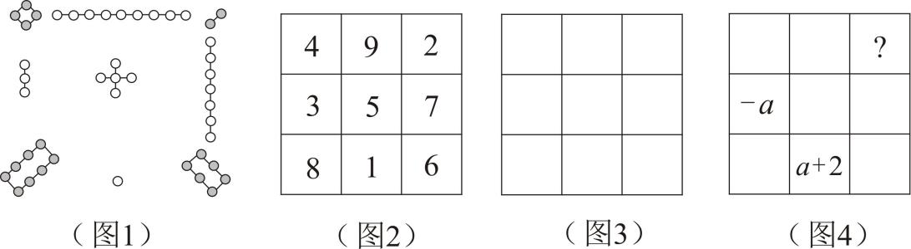
(1)图2中，每行、每列、每条对角线上的三个数之和为___________；
(2)请将 填入图3，使其构成一个三阶幻方．
填入图3，使其构成一个三阶幻方．
(3)如图4，在这个三阶幻方中，只填了两个数，则右上角“？”所表示的数为___________．
39．幻方的历史很悠久，传说最早出现在夏禹时代的“洛书”．把洛书用今天的数学符号翻译出来，就是一个三阶幻方（图1），也即在 的方格中填写了9个数，使得每行、每列、每条对角线上的三个数之和相等．请你解答下列问题：
的方格中填写了9个数，使得每行、每列、每条对角线上的三个数之和相等．请你解答下列问题：
(1)在图2中空格处填上合适的数，使它构成一个三阶幻方；
(2)计算图3方格中m，n的值为多少时，它能构成一个三阶幻方．
40．综合与实践
阅读材料，解答下列问题：
幻方历史悠久，传说最早出现在夏禹时代的“洛书”，如图1．把图1的洛书用今天的数学符号翻译出来，就是一个三阶幻方，如图2，它的每行、每列、每条对角线上的三个数的和都相等． |
(1)在图2中，每行、每列、每条对角线上三个数的和都是______；
(2)设图3所示的三阶幻方中间的数为x（x为整数），请用含x的代数式将图3幻方补充完整；
(3)如图4是一个三阶幻方，按方格中已给的信息，求x的值．
考点06 几何问题
41．如图所示是一个长方形．
(1)根据图中尺寸大小，用含的代数式表示阴影部分的面积；
(2)若阴影部分的面积为30，求的值．
42．小方家的住房户型呈长方形，平面图如图（单位：米），现准备铺设地面．三间卧室铺设木地板，其他区域铺设地砖．
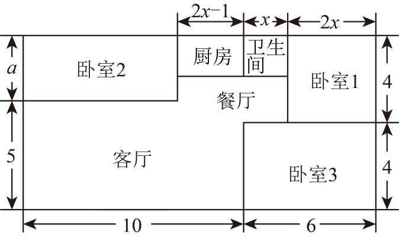
(1)求的值；
(2)铺设地面需要木地板和地砖各多少平方米（用含的代数式表示）？
43．如图，一雕塑的底面呈正方形，在其左右两侧及后方种植宽度均为 的草坪．若草坪总面积为
的草坪．若草坪总面积为
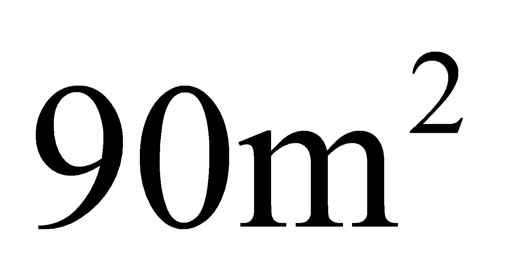
，那么雕塑的底面边长是多少？（设雕塑的底面边长为 ，只列方程不解答）
，只列方程不解答）44．如图，长为50cm、宽为 的大长方形被分割成8块．除阴影A，B外，其余6块是形状、大小完全相同的小长方形，其较短一边的长为
的大长方形被分割成8块．除阴影A，B外，其余6块是形状、大小完全相同的小长方形，其较短一边的长为 ．
．
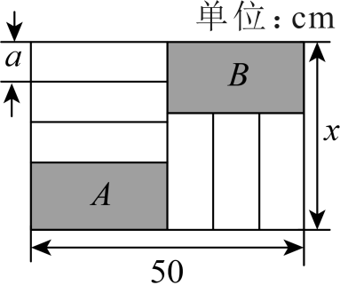
(1)由图可知，每块小长方形较长一边的长为________cm（用含a的代数式表示），图中2块阴影部分的周长和为________cm（用含x的代数式表示）．
(2)当a为何值时，2块阴影部分的周长相等？
45．某种产品形状是长方体，长为 ，它的表面展开图如图所示．
，它的表面展开图如图所示．
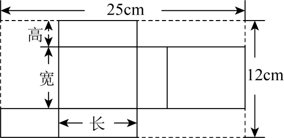
(1)求长方体的体积．
(2)请为厂家设计一种包装纸箱，使每箱能装2件这种产品，要求设计时不计空隙且要使该纸箱所用材料尽可能少(纸箱表面积尽可能小)，并请求出你设计的纸箱的表面积．
46．如图，某公园有一处长为 ，宽为
，宽为
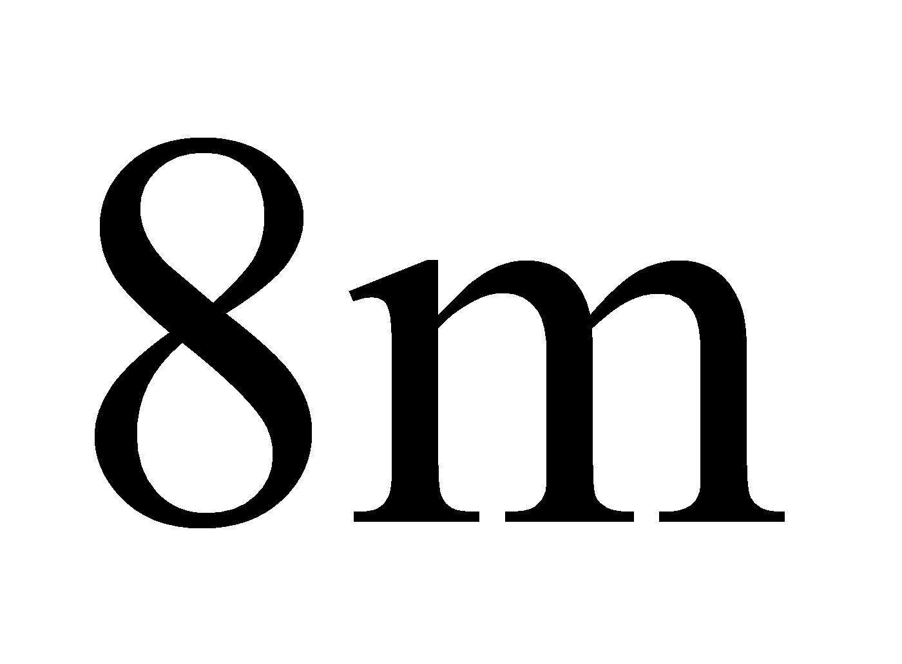
的长方形空地，为美化环境，现计划在阴影部分种植花卉，在空白三角形部分修建一个游客观赏区，已知种植花卉的面积为 ，求长方形空地的长．
，求长方形空地的长．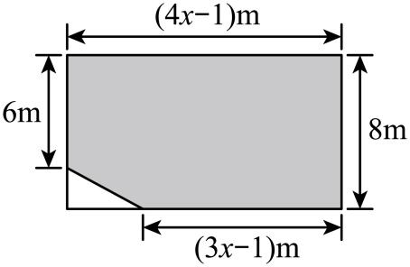
47．如图是某长方体包装盒的展开图，具体数据如图所示，且长方体盒子的长是高的2倍．
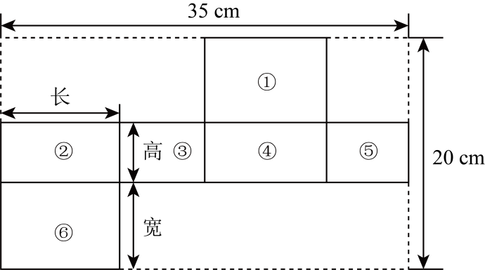
(1)展开图的6个面分别标有如图所示的序号，则原包装盒与①相对的面是________（填序号）；
(2)若设长方体的高为，则：
①长方体的宽为_______________ （用含x的式子表示）；
（用含x的式子表示）；
②求长方体包装盒的体积．
48．如图①，将一张长为 ，宽为
，宽为 的长方形纸片，在四个角上分别剪去边长为的小正方形，将剩下部分折成如图②所示的一个无盖长方体盒子．
的长方形纸片，在四个角上分别剪去边长为的小正方形，将剩下部分折成如图②所示的一个无盖长方体盒子．
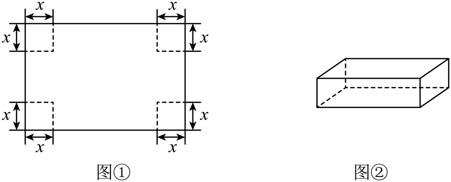
(1)若 ，则长方体盒子的底面积为______
，则长方体盒子的底面积为______ ．
．
(2)若长方体盒子的底面的长是宽的2倍，求该盒子的体积．